Спецiальностi
Спеціалізація «Лікувальна справа»
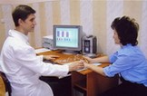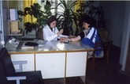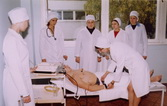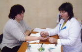
Освітньо-кваліфікаційний рівень — молодший спеціалістГалузь знань — «22 – Охорона здоров’я»
Напрям підготовки — «223 – Медсестринство»
Кваліфікація — фельдшер
Предметна область діяльності — забезпечення лікування хворих
Необхідна базова освіта для вступу: повна загальна середня освіта (11 класів) або базова середня освіта (9 класів)
Форма навчання — денна
Навчання здійснюється: - за рахунок коштів місцевого (державного) бюджету або за рахунок фізичних чи юридичних осіб
План набору — 60 осіб:
База 11 класів: 20 осіб — державне замовлення; 10 осіб — навчання за контрактом
База 9 класів: 20 осіб – державне замовлення; 10 осіб – навчання за контрактом
Термін навчання:
База 11 класів - 2 роки 10 місяців
База 9 класів – 3 роки 10 місяців
Початок навчання — 1 вересня відповідного року
Випуск — 28 лютого відповідного року
Фахівці підготовлені до роботи за Державним класифікатором України “Класифікація видів економічної діяльності” .
Фахівці зі спеціальності «Лікувальна справа» можуть займати первинні посади:
- фельдшер станції (відділення) швидкої та невідкладної медичної допомоги
- фельдшер Фельдшерсько-акушерського пункту (ФАПу)
- фельдшер здоровпункту промислового підприємства чи організації
- фельдшер на морських та річкових суднах
докладніше
Спеціалізація «Сестринська справа»
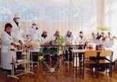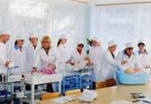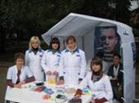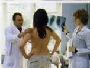
Освітньо-кваліфікаційний рівень — молодший спеціалістГалузь знань — «22 – Охорона здоров’я»
Напрям підготовки — «223 – Медсестринство»
Кваліфікація — медична сестра
Предметна область діяльності — забезпечення догляду за хворими
Необхідна освіта для вступу: базова загальна середня (9 класів) і повна загальна середня освіта (11 класів)
Форма навчання — денна
Навчання здійснюється за рахунок коштів місцевого (державного) бюджету або за рахунок фізичних чи юридичних осіб
План набору — 150 осіб:
База 9 класів: 80 осіб — державне замовлення, 20 осіб — навчання за контрактом
База 11 класів: 20 осіб - державне замовлення, 10 осіб - навчання за контрактом
Термін навчання
База 9 класів - 3 роки 10 місяців
База 11 класів - 2 роки 10 місяців
Початок навчання — 1 вересня відповідного року
Випуск — 29 червня відповідного року
Фахівці підготовлені до роботи за Державним класифікатором України “Класифікація видів економічної діяльності”
Фахівці можуть виконувати зазначену професійну роботу:
медичні сестри і акушерки медичні сестри і акушерки, що асистують професіоналам
Можуть займати первинні посади:
- сестра медична операційна
- сестра медична патронажна
- сестра медична
- анестезист сестра медична
- сестра медична санітарної авіації
- сестра медична станції (відділення) швидкої та невідкладної допомоги
- сестра медична пологового відділення
докладніше
Спеціалізація «Акушерська справа»
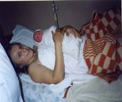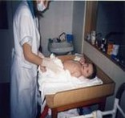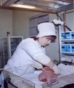
Освітньо-кваліфікаційний рівень — молодший спеціаліст
Галузь знань
— «22 – Охорона здоров’я»
Напрям підготовки — «223 – Медсестринство»
Кваліфікація — акушерка
Предметна область діяльності — надання акушерської допомоги
Необхідна базова освіта для вступу — повна загальна середня освіта (11 класів)
Форма навчання — денна
Навчання здійснюється:
- за рахунок коштів місцевого (державного) бюджету
- за рахунок фізичних чи юридичних осіб
План набору — 30 осіб:
- 15 осіб — державне замовлення
- 15 осіб — навчання за контрактом
Термін навчання — 2 роки і 5 місяців
Початок навчання — 1 вересня відповідного року
Випуск — 25 січня відповідного року
Фахівці підготовлені до роботи за Державним класифікатором України “Класифікація видів економічної діяльності”
Фахівці зі спеціальності «Акушерська справа» можуть займати первинні посади:
- акушерка
- акушерка жіночої консультації
- акушерка стаціонару
- сестра медична
- сестра медичної станції
- сестра медична дитячого стаціонару
- сестра медична- анестезист
- сестра медична дитячої поліклініки
- сестра медична з масажу
- сестра медична операційна
- сестра медична з фізіотерапії
- сестра медична з функціональної діагностики
- сестра медична стаціонару
- статистик медичний
докладніше
Спеціалізація «Лабораторна діагностика»
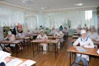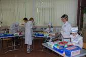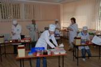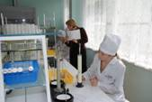
Освітньо-кваліфікаційний рівень — молодший спеціаліст
Галузь знань
— «22 – Охорона здоров’я»
Напрям підготовки — «224 – Технології медичної діагностики та лікування»
Кваліфікація — лаборант медичний, лаборант (біологічні дослідження), лаборант (медицина)
Предметна область діяльності — виконання лабораторних досліджень
Необхідна освіта для вступу — базова загальна середня (9 класів) і повна загальна середня освіта (11 класів)
Форма навчання — денна
Навчання здійснюється:
- за рахунок коштів місцевого (державного) бюджету
- за рахунок фізичних чи юридичних осіб
План набору — 50 осіб:
База 9 класів: 20 осіб — державне замовлення, 5 осіб — навчання за контрактом
База 11 класів: 10 осіб - державне замовлення, 15 осіб - навчання за контрактом
Термін навчання
База 9 класів - 2 роки 10 місяців
База 11 класів - 1 рік 10 міс.
Початок навчання — 1 вересня відповідного року
Випуск — 29 червня відповідного року
Фахівці підготовлені до роботи за Державним класифікатором України “Класифікація видів економічної діяльності”
Можуть займати первинні посади:
- лаборанта аналітичної, гістологічної, гістохімічної, клініко-діагностичної, цитологічної, біохімічної, бактеріологічної, вірусологічної, імунологічної, санітарно-гігієнічної, паразитологічної, науково-дослідницьких і спеціалізованих лабораторій
докладніше
Спеціалізація «Рентгенодіагностика»
Галузь знань
— «22 – Охорона здоров’я»
Напрям підготовки — «224 – Технології медичної діагностики та лікування»
Кваліфікація — рентгенолаборант
Предметна область діяльності — проведення рентгенологічних досліджень, організація та контроль захисту від іонізуючого випромінювання, надання первинної медико–санітарної допомоги при рентгенологічних дослідженнях
Необхідна базова освіта для вступу — повна загальна середня освіта (11 класів) або базова середня освіта (9 класів)
Форма навчання — денна
Навчання здійснюється:
- за рахунок коштів місцевого (державного) бюджету
- за рахунок фізичних чи юридичних осіб
План набору — 40 осіб:
База 9 класів: 10 осіб — державне замовлення; 10 осіб — навчання за контрактом
База 11 класів: 10 осіб – державне замовлення; 10 осіб – навчання за контрактом
Термін навчання:
База 9 класів - 2 роки 10 місяців
База 11 класів – 1 рік 10 місяців
Початок навчання — 1 вересня відповідного року
Випуск — 29 червня відповідного року
Фахівці підготовлені до роботи за Державним класифікатором України “Класифікація видів економічної діяльності”
Фахівці зі спеціалізації «Рентгенодіагностика» можуть займати первинні посади:
- рентгенолаборант
докладніше
Спеціалізація «Експлуатація та ремонт
електронної медичної техніки»
Освітньо-кваліфікаційний рівень — молодший спеціалістГалузь знань — «17 – Електроніка та телекомунікації»
Напрям підготовки — «171 – Електроніка»
Необхідна базова освіта для вступу: повна загальна середня освіта (11 класів) або базова середня освіта (9 класів)
Форма навчання — денна, заочна
Навчання здійснюється: - за рахунок коштів місцевого (державного) бюджету або за рахунок фізичних чи юридичних осіб
Термін навчання:
База 11 класів - 2 роки 10 місяців
База 9 класів – 3 роки 10 місяців
Початок навчання — 1 вересня відповідного року
Фахівці підготовлені до роботи за Державним класифікатором України “Класифікація видів економічної діяльності”, таких як:
- Виробництво медичної техніки, вимірювальних засобів, оптичних приладів та устаткування, годинників
- Ремонт і технічне обслуговування медичної техніки включаючи хірургічне устаткування, та ортопедичних пристосувань
- Монтаж медичної техніки включаючи хірургічне устаткування та ортопедичних пристосувань
Випускник коледжу може працювати в якості:
- спеціаліста по експлуатації, технічному обслуговуванню та ремонту електронної діагностичної, лікувальної, косметологічної медичної апаратури;
- спеціаліста з експлуатації, технічному обслуговуванню та ремонту рентгенівської діагностичної та терапевтичної апаратури;
- спеціаліста в лабораторіях дозиметричного або радіаційного контролю;
докладніше
Спеціалізація «Медична оптика»

Галузь знань — «15 – Автоматизація та приладобудування»
Напрям підготовки — «152 – Метрологія та інформаційно–вимірювальна техніка»
Кваліфікація — технік–оптик
Необхідна базова освіта для вступу: повна загальна середня освіта (11 класів) або базова середня освіта (9 класів)
Форма навчання — денна, заочна
Навчання здійснюється: – за рахунок фізичних чи юридичних осіб
Термін навчання:
База 11 класів – 2 роки 10 місяців
База 9 класів – 3 роки 10 місяців
Початок навчання — 1 вересня відповідного року
Фахівці підготовлені до роботи за Державним класифікатором України “Класифікація видів економічної діяльності”
Випускник коледжу може працювати в якості:
– медичного оптика
– оптика–консультанта в салонах–магазинах “Оптика”
– техніка–оптика (складальник окулярів)
– майстри лабораторії контактної корекції
– техніка–технолога по виготовленню оптичних деталей
– контрольного майстра оптичного цеху
– техніка оптичної вимірювальної лабораторії
Випускники коледжу додатково отримують робочу професію «Складальник окулярів».
докладніше
НАША АДРЕСА
1 корпус
м. Харкiв, 61002,
узвіз Куликівський, 3
тел./факс:
706-39-66, 706-39-64
3 корпус
м. Харкiв,
вул. Гуданова, 4/10
тел. 704-13-15
2 корпус
м. Харкiв,
вул. Амосова, 3а
тел./факс:
310-01-85, 710-27-67
4 корпус та гуртожиток
м. Харкiв,
вул. Луї Пастера, 2
тел. 393-22-72
E-mail: